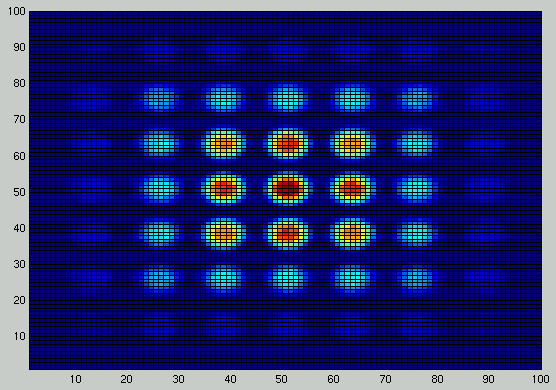
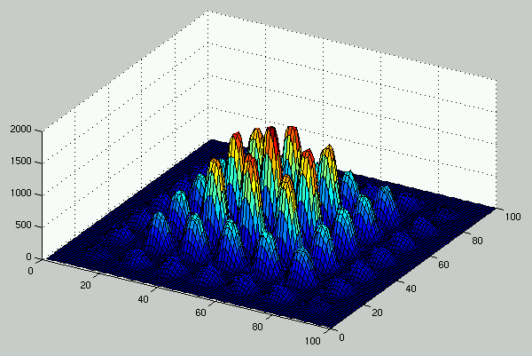

Test results for the guide component
A 3 cm by 3 cm, 2 meter long guide placed 40cm after a small source, with a
pinhole slit at the guide exit and a PSD. Simulated for 30,000,000 neutrons
from the source.


Kristian Nielsen
<kristian.nielsen@risoe.dk> /
Sep 3, 1998.